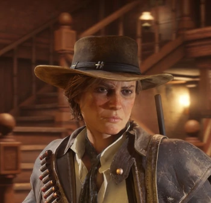

Sadie Adler
Une veuve qui cherche à tout prix à venger la mort de son mari. Implacable, elle n'a peur de rien ni de personne. De mauvais augure pour ceux qui croisent sa route, elle jure cependant fidélité à ceux qu'elle aime.
Histoire
Sadie s'est mariée à un homme nommé Jake, le 7 septembre 1896. Ils vivent au Adler Ranch, au nord de Colter dans l'état d'Ambarino. Le couple partage toutes les tâches. Sadie le considère comme le meilleur homme qu'elle n'ait jamais pu rencontrer. En 1899, Sadie a les cheveux blonds attachés souvent en tresses et les yeux marrons. Elle est souvent habillée d’une chemise blanche, un foulard turquoise, un chapeau, des pantalons et des bottes noir ou d’un haut jaune et d’un pantalons marrons.En 1907 son apparence est similaire à celle de 1899. Elle porte un manteau en cuire marron, une chemise blanche, un foulard marron, des bottes et un pantalon.

Statut - En vie
Sexe - Féminin
Nationalité - Américaine
Occupation - Chasseuse de primes
Anecdote Elle voue une haine à la bande des O'Driscoll